Modularity
Perception, Locomotion, and Manipulation are isolated behind narrow interfaces. The FSM doesn't care if a pose comes from ground-truth or a camera.
Architecture
A modular view of the baseline’s runtime, policies, and helpers.
The baseline is built on a "Decoupled Sequencing" architecture. By separating the high-level state machine from the low-level ONNX policies, we created a system that is easy to debug and extend.
Perception, Locomotion, and Manipulation are isolated behind narrow interfaces. The FSM doesn't care if a pose comes from ground-truth or a camera.
The right reacher runs unconditionally. This keeps the arm in a known pose, ensuring the walker's observations stay within its trained distribution.
The FSMPolicy adapter adds safety guards like carry-pose persistence
and release delays that the raw policies shouldn't have to handle.
While the baseline uses ground-truth pose lookup, we've designed a Visual Oracle perception layer. It uses depth back-projection and segmentation masks to recover object poses directly from the G1's camera streams.

GraspBackend, allowing us to fix simulation NaNs without
altering the high-level FSM logic.